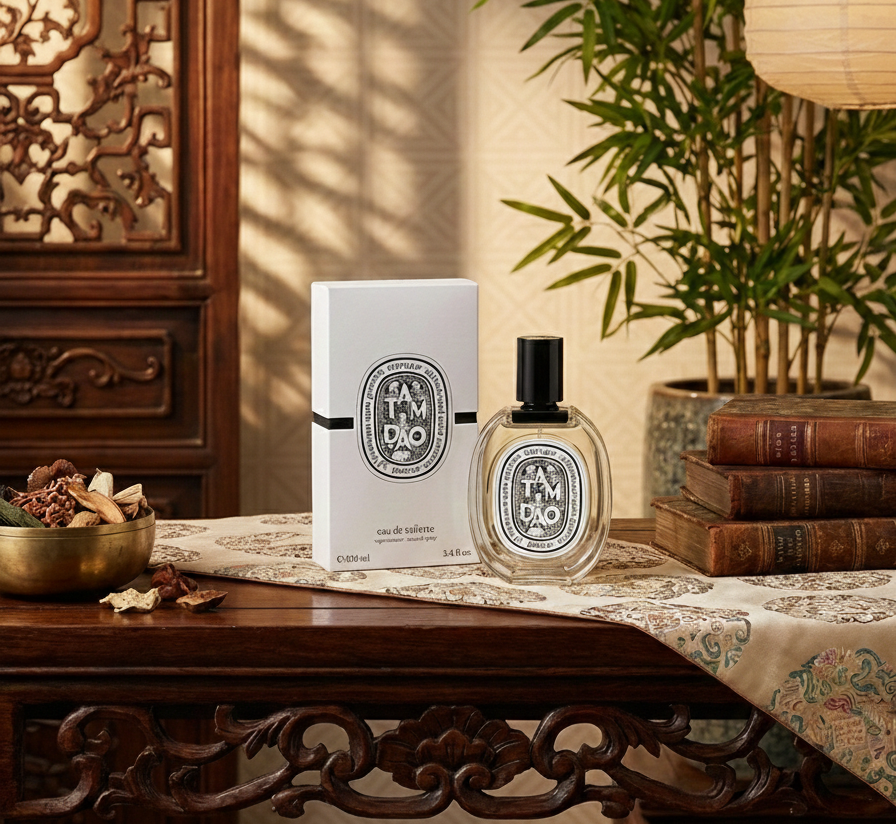

1月も下旬に差し掛かり、寒さがいっそう厳しさを増してきましたね。張り詰めたような冷たい空気の中で、ふと春の気配を待ちわびる。そんな静寂な季節は、自分自身とじっくり向き合える貴重な時間でもあります。
そんな冬の空気に、ふわりと知的な温もりを添えてくれる香りをお探しではないでしょうか？ 甘すぎるバニラやムスクではなく、もっと静かで、芯のある香り。今回は、そんな大人の男性にこそ選んでほしい、ディプティックの傑作「TAM DAO（タムダオ）」をご紹介します。

記憶の奥底に触れる、神聖な森の香り
ディプティックの中でも不動の人気を誇る「タムダオ」。そのインスピレーションの源は、創業者の一人が幼少期を過ごしたインドシナの神聖な森にあります。寺院で焚かれるサンダルウッド、湿り気を帯びた木々の息吹。それは単なるファッションとしての香水を超え、纏う人の「記憶」や「物語」に訴えかける深みを持っています。
なぜ、冬のメンズに「タムダオ」が選ばれるのか
静寂を纏うような、ウッド系の深み
タムダオの主役は、最高品質のサンダルウッド（白檀）です。スプレーした瞬間に広がるのは、華やかさよりも「静けさ」。まるで深い森の中に一人佇んでいるような、凛とした心地よさを感じるはずです。
多くの香水が「他者へのアピール」を目的に作られている中で、タムダオは「自分自身を整える」ための香りと言えるかもしれません。新年の喧騒が去り、本格始動したビジネスシーンでも、この香りがふと漂うだけで、冷静な自分を取り戻せる。そんなお守りのような存在になってくれるでしょう。
冷たい空気に溶け込む、スパイスの温もり
単調なウッディノートで終わらないのが、ディプティックの妙技です。サイプレスやマートルといったスパイス系のアクセントが、ウッドの重厚感に絶妙なキレを与えています。
このスパイシーさが、冬の冷たく澄んだ空気と驚くほど相性が良いのです。厚手のニットやマフラーの隙間から、体温で温められたスパイスの香りが立ち上る瞬間。それは、すれ違う人をハッとさせるような、大人の色気を演出してくれます。
「それ、どこの？」と聞かれる、洗練された個性
タムダオは、いわゆる「よくあるメンズ香水」の枠には収まりません。フローラルやシトラスに頼らず、ウッドの質感だけで勝負する潔さ。そのミニマルで洗練された構成は、纏う人のファッション感度の高さを雄弁に物語ります。
モノトーンのコートや上質なニットなど、冬のシンプルな装いに合わせるだけで、全体がぐっと「オシャレ」に引き締まる。単なる身だしなみを超えた、ファッションアイテムとしての香水を探している方にこそ、この香りは最適解となるはずです。
世代を超えて愛される、リアルな口コミ
実際にタムダオを愛用している男性たちの声を集めてみました。年齢によって感じ方が変わるのも、この香りの奥深さゆえかもしれません。
- 20代後半（クリエイター）
「周りと被らない香水を探していて出会いました。甘くないので媚びている感じがしないし、『センスがいいね』と褒められることが増えました。」 - 30代半ば（営業職）
「スーツに似合う香りです。大事な商談の前、ネクタイを締める時につけると気が引き締まります。信頼感を与えてくれる香りだと思います。」 - 40代（経営者）
「オフの日にリラックスしたくて使っています。最近は寝る前にひと吹きするのも日課。心が安らぐ、手放せない香りです。」
自分に合う香りがわからない方へ
130種類以上の中から選ぶのは大変ですよね。COLLEGRANCEのAI香り診断なら、いくつかの質問に答えるだけで、あなたにぴったりの香水を3本提案してくれます。
AI香り診断であなただけの1本を見つけませんか？
好み・シーン・季節から、プロのAIがぴったりの香水を提案します。
AI香り診断を受けてみる →